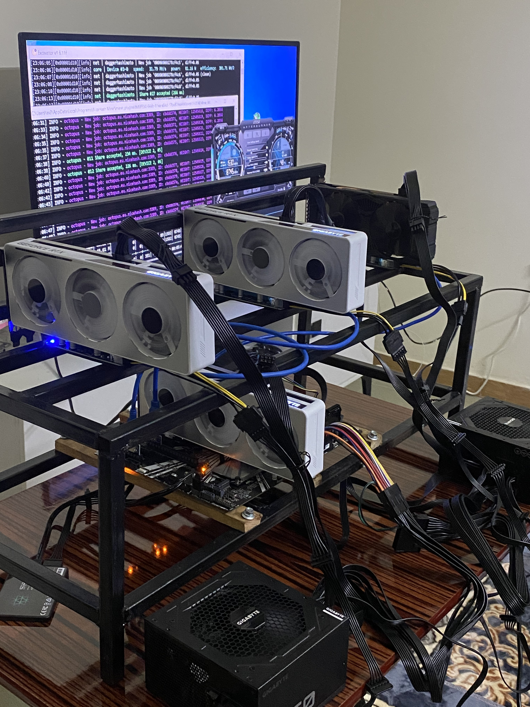

The beginning
There is always something

I began with 3x 3060 v1 and a rob off of a frame because I needed one quick at a late time. I could have waited to get more suitable pieces but I was being myself as always.. impatient. Started with nice and a each time I felt something was off, I had to carry this carefully while on power from one room to another to hook it up with any screen and start diagnosing and troubleshooting.